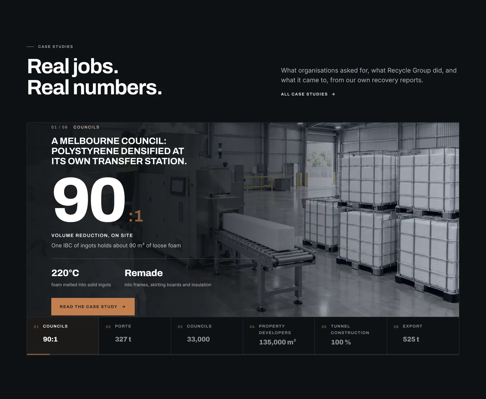
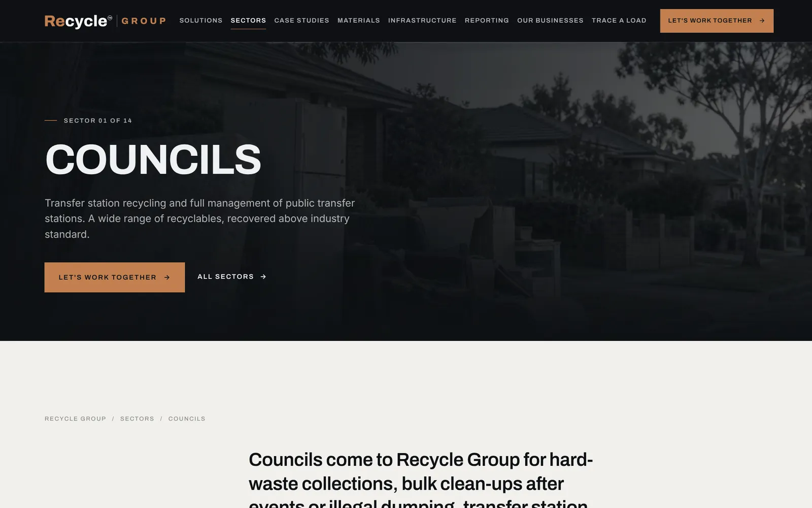
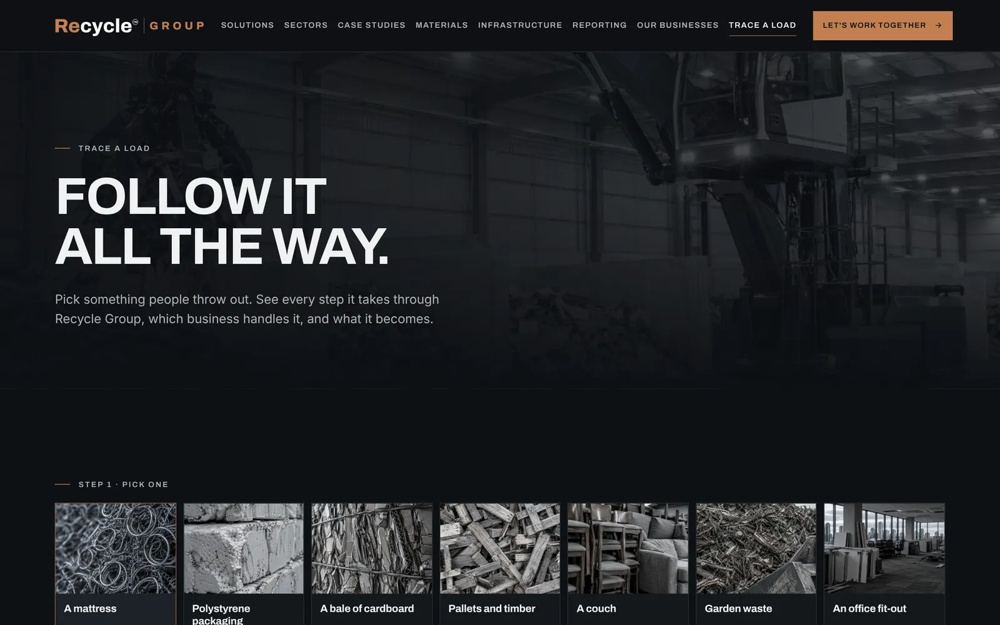
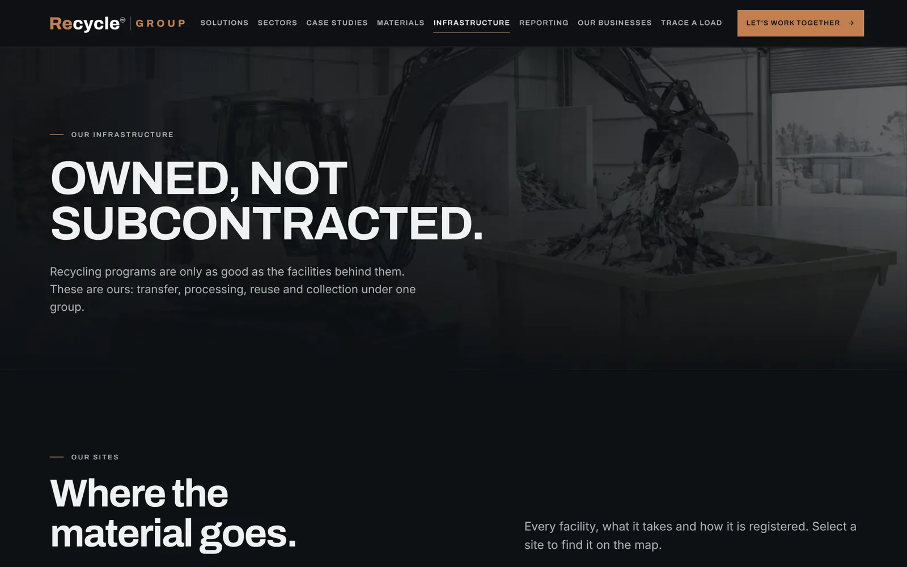
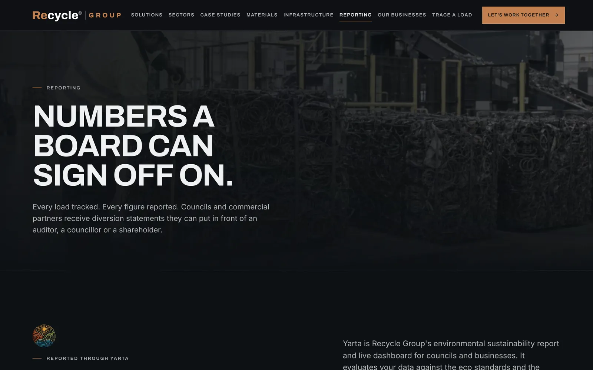

01
A material index
Twelve material streams, each with its own page: what’s taken, how it’s processed and where it goes next.

A 74-page corporate site that makes a complex, multi-brand recycling business clear to councils, government, rail and ports.

Recycle Group recycles everything from steel and polystyrene to mattresses and soil, across several brands, for buyers like councils, state road operators, rail and ports. The story was too big to tell in a brochure site.
Show the scale in seconds, then get each buyer to the exact service, sector and proof they need, without a phone call.
Twelve material streams, each with its own page: what’s taken, how it’s processed and where it goes next.
Big figures turned into something you can see, like a year of Victoria’s landfilled mattresses laid across the MCG playing surface.

A case-study section that leads with the result for each job, so buyers see what was done for organisations like theirs.

Fourteen sector pages, plus infrastructure, chain of custody and reporting: what a council or government buyer needs to sign off a supplier.






The site is live at recycle.net.au: 74 pages covering the group’s materials, sectors and brands.
Hand-built HTML, CSS and JavaScript. Live on its own domain.

Tell us what’s slowing your business down. We’ll audit your website and ads for free and show you what we’d build or fix, instead of selling you another subscription.